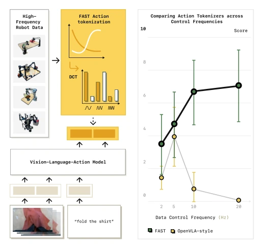
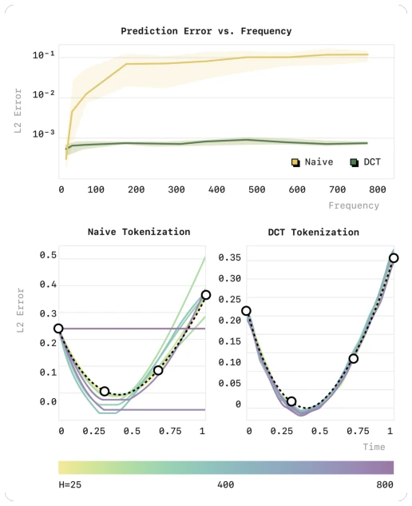
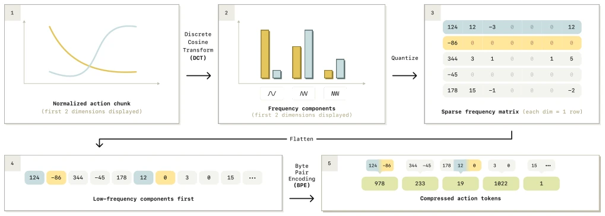
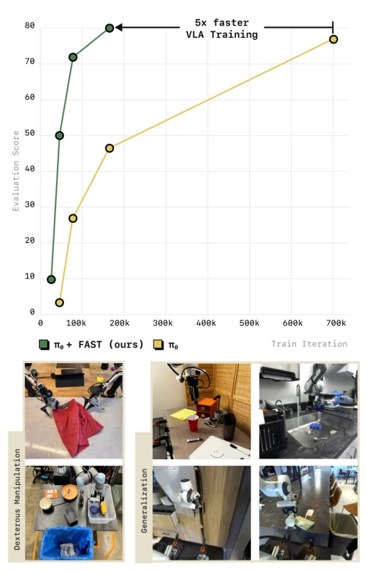
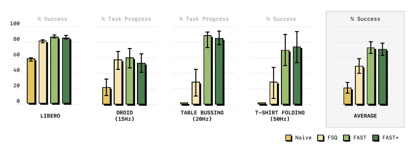
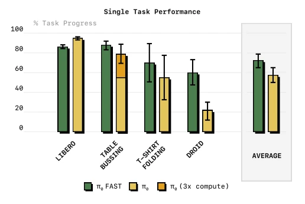
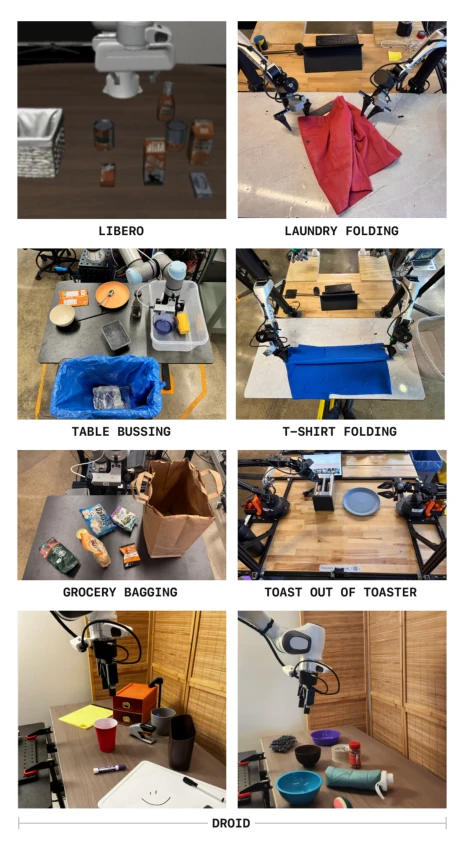
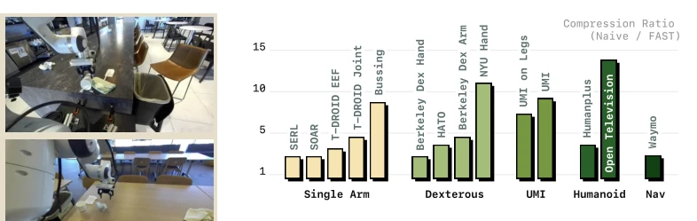
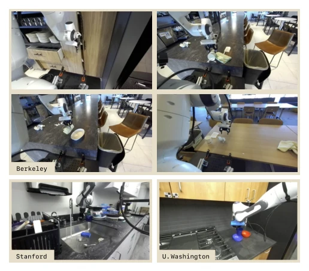
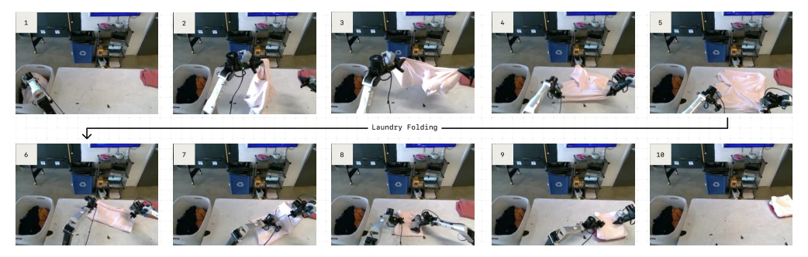

This paper offers a potent remedy for the "action tokenization" bottleneck of autoregressive VLA. Previously, simple per-dimension binning was employed, resulting in excessively high correlation between tokens under high-frequency data, hindering model convergence and even yielding performance inferior to diffusion models. The authors developed FAST using DCT+BPE, enabling autoregressive models to master dexterous manipulation and introducing a universal tokenizer, FAST+. Notably, π0-FAST achieves training speeds 5 times faster than diffusion models; although inference is slower, the trade-off between computational cost and performance is well-balanced. However, forcibly discretizing continuous signals incurs accuracy loss and inference latency as inherent drawbacks, rendering dynamic tasks unrealistic. Furthermore, although FAST+ claims universality, its performance may degrade on unseen robot morphologies.
Autoregressive VLA models (e.g., OpenVLA [39], RT-2 [10]) rely on discrete token prediction, yet existing action tokenization schemes (per-timestep binning) perform extremely poorly under high-frequency control. This is because adjacent tokens in high-frequency signals are highly correlated, causing the marginal information gain of next-token prediction to approach zero, leading the model to easily fall into local optima (e.g., directly copying the previous action). Consequently, VLAs struggle to handle dexterous skills and high-frequency data (e.g., DROID [38]). Existing methods either rely on complex learned compression (e.g., VQ-VAE) or fail to generalize.

Fig. 2: Left: FAST tokenization enables training of autoregres- sive Transformers for dexterous robot control via simple next token prediction. Right: FAST outperforms popular binning tokenization schemes, e.g., used in OpenVLA [39], particu- larly for high-frequency robot data.

Fig. 3: Effect of sampling rate on prediction performance. We train a small autoregressive transformer model on a didactic interpolation task, in which the network must predict the black dashed curve given the four circles. We find that models trained with the binning tokenization approach used in prior VLAs [10, 39] produce increasingly poor predictions as we increase the sampling frequency of the underlying signal, due to strong correlation between consecutive tokens at high frequencies. Our FAST tokenization approach, based on the discrete cosine transform (DCT), addresses the problem and leads to high-quality predictions across all sampling rates.
FAST Pipeline: 1. Normalize actions (quantile normalization); 2. Apply DCT transform to each dimension, converting from time domain to frequency domain; 3. Quantize DCT coefficients (scale & round); 4. Flatten matrix (low-frequency priority); 5. Compress sparse coefficient sequence using BPE. The innovation lies in leveraging DCT's compression properties to reduce redundancy, while BPE handles sparsity. FAST+ is a universal tokenizer pretrained on 1M real trajectories, supporting various robot morphologies. Specifically, DCT coefficients become sparse after scale and round operations; BPE flattens and compresses the sparse matrix, retaining only non-zero high-frequency or low-frequency coefficients. The flattening order prioritizes low frequencies to ensure the autoregressive prediction captures the overall action shape first. There are only two hyperparameters: scale and BPE vocabulary size, and the method is insensitive to their values.

Fig. 4: Overview of the FAST action tokenization pipeline. Given a normalized chunk of actions, we apply discrete cosine transform (DCT) to convert the signal to the frequency domain. We then quantize the DCT coefficients and use byte-pair encoding (BPE) to compress the flattened sequence of per-dimension DCT coefficients into the final action token sequence. See Section V-B for a detailed description.
Evaluated on 7 tasks including Libero, T-Shirt Folding, and DROID. Compared against Naive Binning, FSQ, and Diffusion π0. FAST significantly outperforms Naive Binning on high-frequency tasks (e.g., T-Shirt Folding at 50Hz). FAST+ demonstrates strong generalization. π0-FAST achieves zero-shot generalization on DROID, with training time reduced by 5 times compared to the π0 diffusion version. Ablation studies show the BPE step is crucial for inference speed. Specifically, on the Laundry Folding task, FAST enables autoregressive models to reach diffusion model performance levels for the first time. In DROID zero-shot evaluation, the FAST model understands natural language instructions, whereas diffusion models often ignore instructions.

Fig. 1: We propose FAST, a simple yet effective approach for tokenization of robot action trajectories via time-series compression. FAST enables training of autoregressive VLAs that solve complex dexterous manipulation tasks and gener- alize broadly to new scenes. We use it to train π0-FAST, a generalist robot policy that matches the performance of the state-of-the-art π0 diffusion VLA on dexterous and long- horizon manipulation tasks, while training 5x faster (top).

Fig. 6: Comparison of policy performance using different tokenization approaches. We find that tokenization approaches that compress action targets (FAST, FSQ) lead to substantially more efficient training than the na¨ıve binning tokenization used in prior VLAs. Overall, we find that FAST leads to more effective policy training than FSQ, particularly on dexterous real-robot tasks. Our universal tokenizer, FAST+, matches the performance of dataset-specific tokenizers. We report mean and 95% CI.

Fig. 9: Comparison of diffusion π0 [7] to our π0 model with FAST decoding on single-task training. On small datasets (Libero, T-Shirt Folding), both perform comparably. On large datasets (Table Bussing), FAST converges faster. In DROID, we find that FAST follows language instructions better. We report mean and 95% CI.
其他图片Other Figures

Fig. 5: Evaluation environments. We test FAST across 7 evaluation environments: 6 real-robot tasks and 1 simulation environment. The tasks are designed to test VLA performance on highly dexterous tasks, like folding cloths from a laundry basket (“Laundry Folding”), and generalization, e.g., zero-shot table-top manipulation in unseen environments (“DROID”).

Fig. 8: Universal tokenizer. We test the compression rate achieved by our FAST+ tokenizer vs. na¨ıve tokenization across diverse robot datasets, unseen during tokenizer training. We find that FAST is effective across a wide range of robot morphologies, action spaces and control frequencies.

Fig. 7: Evaluation environments of FAST policy trained on DROID [38]. We find that the same policy checkpoint generalizes robustly, and performs various simple table-top tasks zero-shot across three university campuses.

Fig. 10: Rollout of π0-FAST on the laundry folding task. FAST tokenization enables autoregressive VLAs to perform complex, long-horizon, and dexterous tasks that were impossible with previous tokenization schemes.